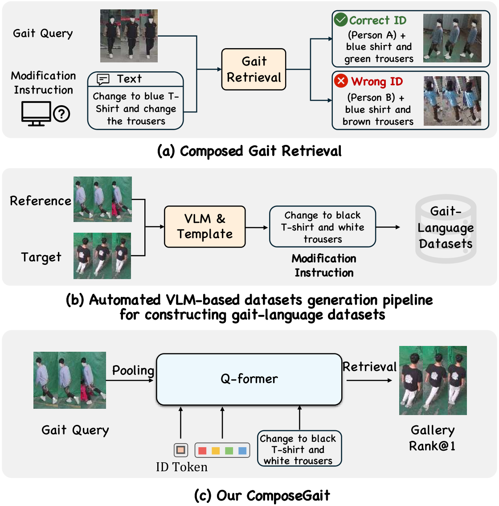

Beijing University of Posts and Telecommunications
M.S. student, School of Artificial Intelligence · 2025–present
Also known as Nanami / SP1C4
I am a master's student at the School of Artificial Intelligence, Beijing University of Posts and Telecommunications (BUPT).
My current interests center on 3D and 4D reconstruction and human-scene understanding: recovering the geometry and dynamics of people and their surroundings from visual observations. I am also interested in world models, vision-language models, and agentic AI, particularly their connections to visual understanding and reasoning.
My earlier research focused on gait recognition and multimodal retrieval. In ComposeGait, we study how to retrieve gait sequences that preserve a person's identity while following natural-language instructions about appearance or viewpoint changes.
M.S. student, School of Artificial Intelligence · 2025–present
B.E., Zhuoyue Honors College · 2024

Outside research, I enjoy playing video games, including rhythm games. I am especially fond of the Final Fantasy series and Trails in the Sky.
I am deeply grateful to the VTuber Pmarusama, featured in my profile picture, for helping me through one of the hardest periods of my life.